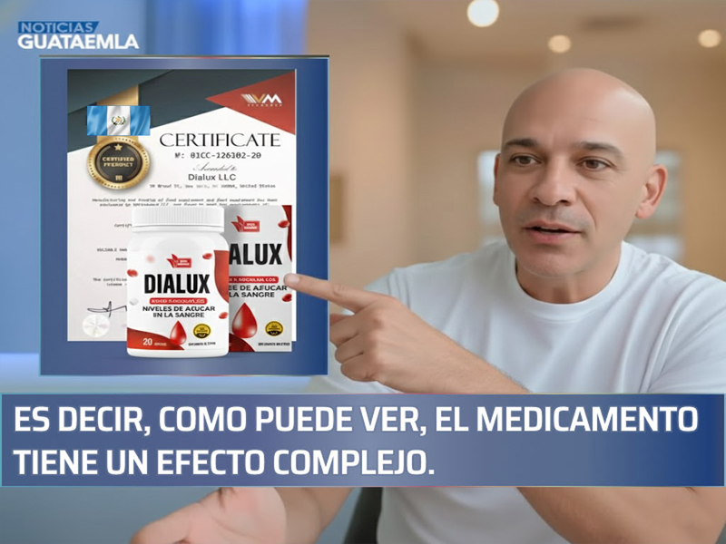
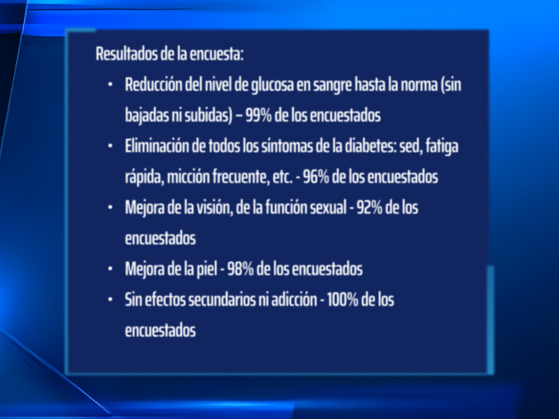

El Dr. Juan Rivera es un especialista en endocrinología y salud metabólica, que ha dedicado más de 15 años a estudiar cómo restaurar la función del páncreas y mejorar la resistencia a la insulina en pacientes con diabetes tipo 2 en Guatemala.
Dr. Juan Rivera: "En Guatemala la diabetes se trata con medicamentos que solo controlan temporalmente el azúcar, dejando a los pacientes expuestos a complicaciones graves."
El año pasado, Dr. Rivera visitó varias ciudades del país para conocer de cerca la situación de los diabéticos guatemaltecos. Lo que vio lo dejó sorprendido. Según él, en muchos casos se hace un negocio con los pacientes más que tratarlos de forma efectiva…
"Después de compartir sus hallazgos con colegas internacionales, Dr. Rivera dio su consentimiento para una entrevista a la cadena GuateSalud. ¿Qué cosas no le gustaron al famoso médico en los tratamientos para la diabetes en Guatemala? ¿Y por qué dice que en Guatemala LOS DIABÉTICOS "A NADIE LES IMPORTAN"?
- Hablando ante los periodistas, usted dijo que lo que había visto en Guatemala lo había dejado en shock. ¿Podría comentarlo?

- ante todo quiero decir que me gusta mucho Guatemala, su cultura y su gente. Pero los enfoques que se usan para tratar la diabetes causan shock. La medicina aquí tiene objetivos muy diferentes, al menos en endocrinología.
Mire, ¿qué sugieren los médicos para tratar la diabetes en Guatemala? Metformina, Glucotrol, Glucolon, Daonil y otros medicamentos similares.
Sin embargo, cualquier especialista internacional le dirá que estos medicamentos no pueden CURAR LA DIABETES. Solo reducen temporalmente la glucosa en sangre. Lo hacen A CORTO PLAZO. Por eso, cuando la acción del remedio termina, los niveles de glucosa vuelven a subir. Los pacientes deben tomarlos continuamente.
Pero los altibajos de glucosa que ocurren con esta terapia son igual de dañinos que los niveles elevados. Dañan lentamente vasos sanguíneos y órganos internos. Por eso todas las consecuencias de la diabetes (problemas de visión, corazón, insuficiencia renal, pie diabético, etc.) se manifestarán de todos modos, solo que tal vez un poco más tarde.
Le sorprendería saber que en Europa este tratamiento hace más de 20 años que no se usa. Y los medicamentos para bajar glucosa se aplican solo en casos extremos, para reducciones urgentes.
¿Por qué esta diferencia? Porque los médicos en Guatemala generalmente no buscan que la diabetes sea curable. Es más rentable vender medicamentos que curar a las personas. En Europa, la diabetes tipo 2 ya no se considera intratable.
En Guatemala, los diabéticos pueden recibir medicamentos gratuitos, pero es difícil obtenerlos. Cada semana aparecen noticias sobre problemas con la distribución farmacéutica. No es fácil ser diabético aquí, pero para los fabricantes de medicamentos es un negocio muy lucrativo.
- ¿Qué pasa con el tratamiento de la diabetes en Europe?
- Casi todos los diabéticos en Europe se sienten sanos, y más del 60% se recuperan por completo. Todo gracias a un enfoque diferente: no solo aumentar insulina, sino mejorar la descomposición de glucosa reduciendo la resistencia a la insulina.
Comprender la resistencia a la insulina es clave para tratar la diabetes tipo 2.
Lo más notable es que con este método la función del páncreas se normaliza: la diabetes tipo 2 se normaliza por completo. Puede tardar seis meses o un año, pero el paciente se vuelve sano. Todos los síntomas se normalizan y se prolonga la vida 10-15 años.
Cuando vi las estadísticas de Guatemala, me asusté. La diabetes ocupa el segundo lugar en mortalidad y muchos pacientes mueren jóvenes.
- ¿No hay remedios en Guatemala que reduzcan la resistencia a la insulina?
- En Guatemala, como en Europa, hay medicamentos para tratar la diabetes tipo 2. En Guatemala es Dialux. Muchos diabéticos le deben su salud. Dialux fue inventado por los científicos Guatemala en 2010. El principal componente activo de este medicamento es una forma especial de la vitamina D, llamada alfaciferol . ¡Esta sustancia es capaz de MEJORAR LA REACCIÓN DE DESCOMPOSICIÓN DE LA GLUCOSA MÁS DE 7 VECES! Lo que conduce a la normalización de los niveles de glucosa en la sangre. Y, como dije anteriormente, la disminución de la resistencia no solo se observa inmediatamente después de tomar el medicamento, sino también se nota una acción prolongada.
Además de alfaciferol, Dialux contiene también más de 14 vitaminas, micro y macronutrientes útiles para la salud, que están destinados a mejorar los órganos internos dañados por la diabetes. No voy a enumerarlos todos, sólo algunos.
|
Alcachofa |
normaliza los niveles de glucosa, restaura la piel, el cabello y las uñas |
|
Yacon |
previene la diabetes, controla los niveles de colesterol |
|
Pasuchaca |
normaliza la presión arterial, acelera la curación de heridas, calma el sistema nervioso |
|
Cuti cuti |
nergiza, estimula el metabolismo, normaliza los niveles de insulina |
|
Cúrcuma |
elimina la inflamación, reduce el riesgo de enfermedades del corazón, promueve la pérdida de peso, eleva el estado de ánimo |
Es decir, como puede ver, el medicamento tiene un efecto complejo.
- ¿Dialux no se vende en farmacias de Guatemala?
- Exactamente, no. Al mismo tiempo, sin lugar a dudas, los endocrinólogos Guatemala, al menos aquellos que estén interesados en los tratamientos progresivos, conocen alfaciferol y saben que es capaz de reducir la resistencia a la insulina.
Por lo que sepa, el fabricante de Dialux quería entrar en el mercado farmacológico Guatemala. Pero no se lo permitieron hacer inventando cientos de obstáculos. Como dije ya, en Guatemala no es rentable curar a los diabéticos. ¡Es que la farmacología hoy es un negocio! Incluso en Europa. Pero si en Europa este negocio es honesto (la gente se vuelve sana), ¡entonces en Guatemala no!
- ¿Qué aconsejaría a los diabéticos Guatemala?
- La gente ordinaria, especialmente las personas que tienen más de 50, sin duda sufren de esto más que otros. Pero afortunadamente, hay una salida. Por el momento, el Centro Médico Nacional de Endocrinología ofrece Dialux a todos los diabéticos Guatemala. Los empleados de este Centro y el fabricante proporcionó un lote necesario del remedio a un precio minimo. Por lo tanto, ahora cualquier diabético de Guatemala puede recibir Dialux por mensajería.
Ahora le diré lo que hay que hacer para obtener el medicamento.
Es necesario:
- Dejar una solicitud;
- Después, un especialista consultor se pondrá en contacto con usted y responderá a todas las preguntas que tenga. Tiene que decirle la dirección de envío;
- Después de 2-3 días el repartidor le traerá el paquete.
Vendemos 6 meses distribuyendo Dialux. Esta oportunidad ya la aprovecharon varios miles de diabéticos Guatemala. Les pedimos a todos los que recibieron Dialux que participen en la encuesta y evalúen la eficacia del medicamento. Más de 2000 personas participaron en la encuesta hasta ahora.
- ¿Cuánto tiempo será válido el precio reducido del remedio?
- Hasta que termine el lote destinado. Pero quiero advertirles que ya quedan pocas unidades. Últimamente, lo vienen pidiendo más y más. Probablemente, los diabéticos Guatemala se enteran de su alta eficiencia en comparación con las pastillas convencionales para reducir los niveles de glucosa.
Hasta que el medicamento haya terminado, les recomiendo a todos los diabéticos que soliciten su pedido en nuestro sitio web..
¡No se requiere ninguna documentación para obtener el medicamento!


Pedir Dialux